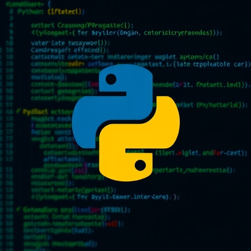

Certificates




B.Tech ECE | VLSI Enthusiast | Project Assistant – ABV-IIITM Gwalior
I am Hitik Kumar Nayak, a B.Tech Electronics and Communication Engineering graduate with strong interest in VLSI Design, Analog Circuits and Semiconductor Research. Currently working as Project Assistant at ABV-IIITM Gwalior under MeitY-sponsored C2S Project on Implantable Pacemaker Chip (iPACE-CHIP).
Guru Ghasidas University, Bilaspur
CGPA: 7.62 / 10
Year of Completion: 2025
Subjects Covered: Aptitude Logical Reasoning Numerical Ability Verbal Ability
Working on Implantable Pacemaker Chip (iPACE-CHIP) under MeitY C2S Project. Responsibilities: EDA Tools Schematic Design Layout Verification Research Support
Designed Hybrid Full Adder using LT Spice. Worked on: CMOS Inverter FINFET Design Delay Analysis Power Calculation
Developed: Password Generator Quiz Game Application
Designed schematic and layout using Cadence Virtuoso. Completed: DRC LVS PEX Post-layout Simulation
Designed IO Pad Ring for chip integration using Cadence tools.
Cadence Virtuoso LT Spice VLSI Design Analog Circuits HTML CSS JavaScript Python
